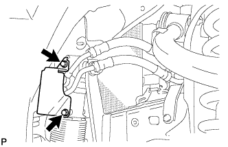
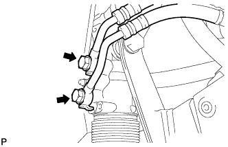
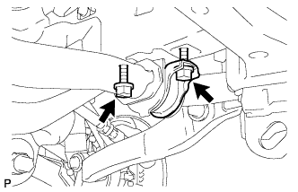
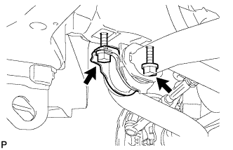
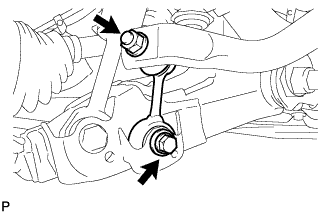
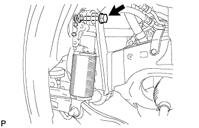
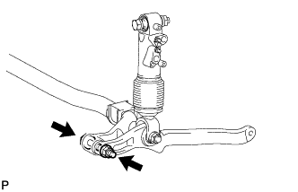
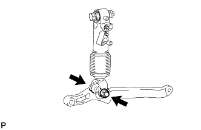
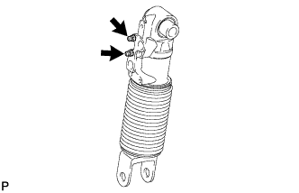

FRONT STABILIZER BAR (w/ KDSS) > REMOVAL |
| 1. REMOVE STABILIZER CONTROL VALVE PROTECTOR |
 |
Detach the clamp, and disconnect the connector from the protector.
Remove the 3 bolts and protector.
| 2. OPEN STABILIZER CONTROL WITH ACCUMULATOR HOUSING SHUTTER VALVE |
Using a 5 mm hexagon socket wrench, loosen the lower and upper chamber shutter valves of the stabilizer control with accumulator housing 2.0 to 3.5 turns.

| 3. REMOVE FRONT WHEEL |
| 4. REMOVE TAILPIPE ASSEMBLY |
for 2UZ-FE:
Remove the tailpipe (Click here).
for 1VD-FTV:
Remove the tailpipe (Click here).
| 5. REMOVE EXHAUST CENTER PIPE ASSEMBLY |
for 2UZ-FE:
Remove the center exhaust pipe (Click here).
for 1VD-FTV:
Remove the center exhaust pipe (Click here).
| 6. DISCHARGE SUSPENSION FLUID PRESSURE |
 |
Connect the hose to the bleeder plug for the stabilizer control with accumulator housing and loosen the bleeder plug.
Discharge the suspension fluid from the stabilizer control with accumulator housing.
After the fluid pressure has dropped and oil has drained out, tighten the bleeder plug and remove the hose.
| 7. REMOVE FRONT FENDER SPLASH SHIELD SUB-ASSEMBLY LH |
 |
Remove the 3 bolts and screw.
Turn the clip indicated by the arrow in the illustration to remove the fender splash shield.
| 8. REMOVE FRONT FENDER SPLASH SHIELD SUB-ASSEMBLY RH |
| 9. REMOVE NO. 1 ENGINE UNDER COVER SUB-ASSEMBLY |
 |
Remove the 10 bolts and No. 1 engine under cover.
| 10. REMOVE FRONT FENDER APRON SEAL LH |
 |
Using a clip remover, remove the 3 clips and apron seal.
| 11. REMOVE FRONT FENDER APRON SEAL REAR LH |
 |
Using a clip remover, remove the 4 clips and apron seal.
| 12. REMOVE STABILIZER CONTROL TUBE PROTECTOR |
 |
Remove the 2 bolts and tube protector.
| 13. DISCONNECT FRONT NO. 1 STABILIZER CONTROL TUBE ASSEMBLY |
 |
Remove the 2 union bolts and 2 gaskets, and disconnect the stabilizer control tube.
| 14. LOOSEN FRONT NO. 1 STABILIZER BRACKET LH |
 |
Loosen the 2 bolts of the front stabilizer brackets.
| 15. LOOSEN FRONT NO. 1 STABILIZER BRACKET RH |
 |
Loosen the 2 bolts of the front stabilizer brackets.
| 16. REMOVE FRONT STABILIZER LINK ASSEMBLY LH |
 |
Remove the 2 bolts, nut and stabilizer link.
| 17. REMOVE FRONT STABILIZER LINK ASSEMBLY RH |
 |
Remove the bolt, nut and stabilizer link.
| 18. REMOVE FRONT NO. 1 STABILIZER BRACKET LH |
Remove the 2 bolts and stabilizer bracket from the front frame assembly.
| 19. REMOVE FRONT NO. 1 STABILIZER BRACKET RH |
Remove the 2 bolts and stabilizer bracket from the front frame assembly.
| 20. DISCONNECT FRONT STABILIZER CONTROL CYLINDER |
 |
Remove the bolt, washer, nut, and stabilizer control cylinder from the frame assembly.
| 21. REMOVE FRONT STABILIZER BAR |
 |
Remove the bolt, nut and front stabilizer bar from the stabilizer control arm.
| 22. REMOVE FRONT NO. 1 STABILIZER BAR BUSH |
Remove the 2 stabilizer bar bushes from the front stabilizer bar.
| 23. REMOVE FRONT STABILIZER CONTROL ARM ASSEMBLY |
 |
Remove the bolt, nut and front stabilizer control arm from the front stabilizer control cylinder.
| 24. REMOVE FRONT NO. 1 SUSPENSION CONTROL BLEEDER PLUG |
 |
Remove the 2 front suspension control bleeder plugs from the front stabilizer control cylinder.